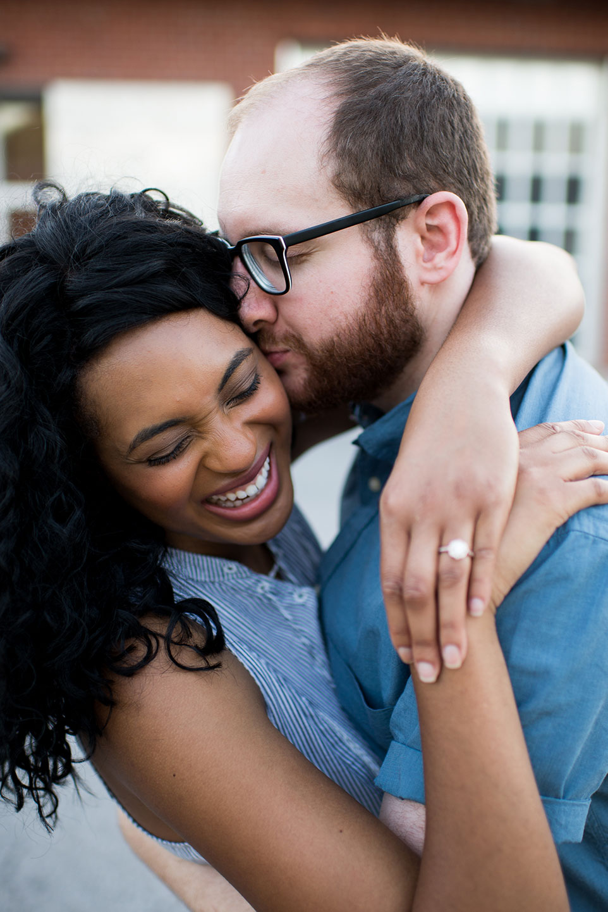
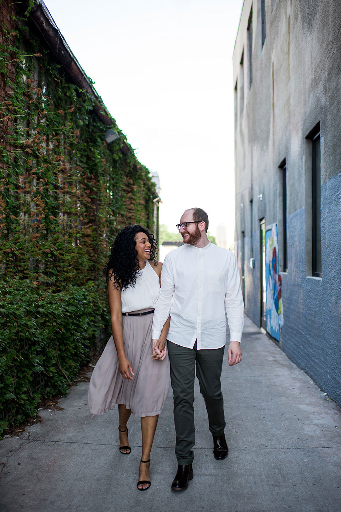
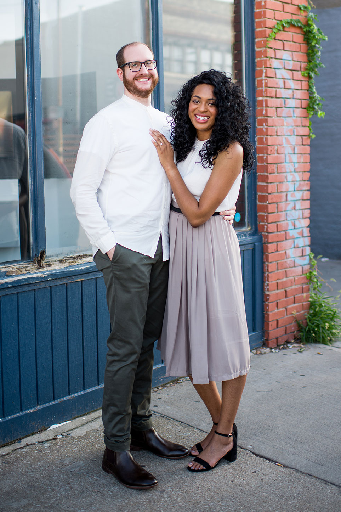
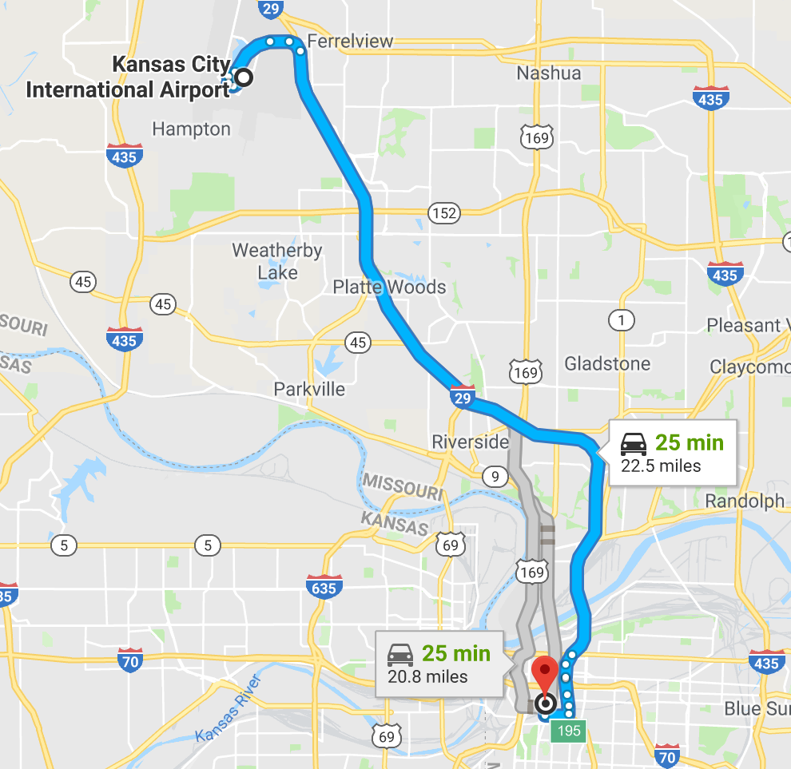

The groom was born and raised in Birmingham, AL. A graduate of the University of Alabama, "Roll Tide" and Bama football rank high on the list of things he loves. Brett enjoys sci-fi, video games, movies, and computer programming. He loves introducing his fiancée to some of his favorite activities. Brett is a fantastic cook and spoils Joni with home-cooked restaurant quality cuisines. He is excited to return to Kansas City to celebrate this day with his soon to be bride, family, and friends.
Joni & Brett
Kansas City, MO | October 12, 2019
- 

- 
- 
The bride is happy to call the state of Kansas home. After living in the suburbs and downtown, Kansas City has always held a special place in Joni's heart. Joni moved to Birmingham, AL when she accepted her first job after graduate school. She had no idea that this would be where she would meet her future husband. Four years and fifteen countries later Joni is so excited to walk down the aisle. Joni loves traveling, crafting, binging tv shows, and is always eager to try a new meal.
Food has always been a staple of Joni and Brett's relationship, and the way they met was no different. It started at the aptly-named, Glory Bound restaurant in Tuscaloosa, AL. Or rather it would have... Joni was invited to Tuscaloosa by her childhood friend, Lauren, to go get dinner and have drinks. Brett was invited out by his college roommate Nick, who at the time was dating Lauren (now they are happily married). Having driven from Atlanta that morning, Joni unfortunately missed dinner and unknowingly postponed her meeting of Brett. The meet up wasn't postponed for long, as an hour later Joni arrived in Tuscaloosa. Instantly hitting it off, both knew this wouldn't be the last time they saw each other. Two days later, Joni was back in Tuscaloosa for their first time “hanging out”, they went to Brett's favorite sushi restaurant Ichiban. Brett was clearly smitten, because the next day Brett asked Joni on an “official” date and they went to the restaurant El Barrio in Birmingham, where Brett's childhood best friend, Neil, just happened to be their server. El Barrio has always been a staple in the relationship ever since that first date, with the couple's first home together, a loft, on the same street as the restaurant. Brett and Joni's love for food is almost as great as their love for each other!
Traveling has become one of Brett and Joni's favorite activities, so it comes at no surprise that a vacation would serve as the backdrop for their engagement. Joni had just finished running a week-long summer camp for high school students. Exhausted and a little smelly she was apprehensive when Brett had something planned for her week off. With little sleep and time to recuperate the couple jumped on a plane to head north to Toronto, Canada. This was an unusual trip, because it was a complete surprise to control fanatic Joni. Reluctantly at times, Joni took a backseat while Brett led the way. Four days into the trip, Joni was unware that the biggest surprise was yet to come. The morning started with a trip to the Niagara Falls, a beautiful site to see. Headed back for dinner reservations with plenty of time to spare, or so they thought, they were in a slight fender bender (not our fault) on the highway in their rental car. This 90 minute delay, put a kink in their plans.
Nevertheless, they made it back and were able to make their dinner reservations at a popular Toronto eatery, Rasa. While there they enjoyed a special tasting menu called "The Experience", an 8 course menu of their Canadian fusion cuisine. Next, using the historic Toronto Streetcar, they traveled to the Billy Bishop Island Airport. Joni had no idea what would happened next as they entered a small trailer on the tarmac of the airport. To her surprise they would soon take off on a twilight helicopter tour, an adventure that has been on Joni's bucket list for years. As they soared through the sky, Brett nervous and shaky started recounting the years of their relationship. As the helicopter landed, the couple still mesmerized by the breathtaking experience stepped out. However, this adventure was far from over! As the photographer distracted Joni for a few more pictures, Brett sneakily reached into his pocket and got on one knee. HE POPPED THE QUESTION! Stunned and trying to stay composed Joni said yes! An apprehensive vacation, turned into the adventure of a lifetime.
Details
Wedding Details
Ceremony & Reception
The Bride and the Bauer
115 W. 18th StreetKansas City, MO 64108
Google Maps
Free street parking and parking lots are available close to the event. There is limited space in the parking lots so we suggest carpooling or taking an Uber/Lyft. No vehicles may be left in the parking lot overnight or they WILL be towed!
Dress - Cocktail Attire.
Accommodations
There are many hotels and AirBnBs close to the wedding venue with short rides to many of Kansas City’s main attractions.
Hotels

Explore KC!
There is so much to do in Kansas City...
...something for everyone!
- Kansas City Chiefs football
- Negro Leagues Baseball Museum
- Kansas City BBQ
- Boulevard Brewing Company
- Country Club Plaza
These are just our suggestions. Click here to explore for yourself!
Travel
Airport - Kansas City International Airport (MCI)
Getting from the airport to downtown is about a 25 minute drive (~$35 Uber/Lyft ride). There are also airport shuttles available.
Kansas City has both Uber and Lyft to get you around conveniently!
Please note that Kansas City is fairly large city with a lot going on. We are getting married downtown where a lot of popular events happen and road work is inevitable. When traveling, please allow extra time for traffic and other possible delays.
If you want to explore downtown, take a ride on the FREE Ride KC Streetcar! Learn more at KCStreetcar.org
Registry
Shop our registry below, or
click here to open it in another window